We hebben het met elkaar te doen
De komst van grote groepen immigranten vanaf de jaren 70 leidt tot gespannen verhoudingen in buurten. Oorspronkelijke bewoners raken ontheemd, wijkorganen en actiegroepen in oude wijken eisen een spreidingsbeleid van buitenlanders. Ze willen dat ook corporatiewoningen in naoorlogse wijken worden opengesteld voor migranten.
Bewonersorganisaties en opbouwwerkers proberen migranten te betrekken bij hun activiteiten via Turkse en Marokkaanse werkgroepen. Ook worden culturele verenigingen en zelforganisaties van migranten ondersteund die opereren in een los verband met de bewonersorganisatie.
Stadsvernieuwing en het bouwen voor de buurt verliezen in de jaren 90 hun bindende kracht in wijken. Bewonersorganisaties veranderen in professionele steunpunten voor diverse bewonersgroepen en initiatieven.
Voor migranten van de eerste generatie die worden getroffen door de crisis van de jaren 80 zijn eigen ontmoetingsplekken, vaak gekoppeld aan moskeeën, een centraal belang.
Opbouwwerkers proberen een verstandhouding te bewerkstelligen tussen verschillende groepen bewoners. Het is een worsteling met weerbarstige situaties zoals blijkt uit praktijkbeschrijvingen van werk in uitvoering in o.m. Crooswijk, het Oude Westen en Pendrecht in de periode 1970-2005.
Verhuisstromen
In 1972 besluit de Rotterdamse gemeenteraad, na aanvallen van bewoners op pensions voor gastarbeiders, tot een maximum aantal buitenlanders per wijk van 5%.
Anno 2018 heeft 50% van de Rotterdamse bevolking een migratie achtergrond, de helft van deze bewoners is geboren in Rotterdam.
De veranderende bevolking zet het samenleven in buurten onder druk. De komst van gastarbeiders gaat samen met de trek van bewoners uit oude wijken naar de nieuwe buitenwijken. Hun plek wordt ingenomen door studenten en starters. Eind jaren 70 komen de gezinnen van Turkse en Marokkaanse gastarbeiders. In het Oude Westen vestigen zich ook veel Surinamers, in Delfshaven Kaapverdianen.
De eerste grote nieuwbouwprojecten in Feijenoord en Crooswijk zijn bestemd voor bewoners die al lang in de wijk wonen. Gastarbeiders vestigen zich in de oudbouw, bewoners die in onverbeterde buurten achterblijven protesteren tegen ‘de invasie van buitenlanders’. Vanaf de jaren 90 vertrekken veel bewoners van naoorlogse wijken als Pendrecht naar randgemeenten. Nieuwkomers vestigen zich in de verouderde portiek-woningen.
Opbouwwerkers proberen in de jaren 80 migranten te betrekken bij bewonersorganisaties en stadsvernieuwing. Opbouwwerkers van Marokkaanse en Turkse komaf gaan zelforganisatie van migrantengroepen ondersteunen. Ook worden straatgroepen gevormd waarin bewoners van diverse komaf samen Opzoomeren.
Adagium voor opbouwwerkers is, in de woorden van Riet Hoste, actief in de straatgroep in de Volmarijnstraat: ‘we hebben het met elkaar te doen’. (Onze straat, 1995)
Bij autochtone bewoners bestaat vaak afweer, ze zien hun buurt onherkenbaar veranderen. De Centrumpartij van Janmaat keert zich in 1980 tegen de ‘massa-immigratie’. Pim Fortuyn verhuist in de jaren 90 naar Hillesluis. Hij ziet dat Turkse immigranten gesloten gemeenschappen vormen, met leefwijzen van het platteland van Anatolië. Hij noemt de islam ‘een achterlijke cultuur’.
Waarschuwing vooraf. Bij het spreken over verhoudingen tussen bevolkingsgroepen ligt het gevaar van generalisering op de loer. In de afgelopen decennia wijzigen ook de omschrijvingen van de immigranten: gastarbeiders, migranten, allochtonen, Nederlanders met een migratie-achtergrond. Veelgebruikte term blijft ‘buitenlanders’.
Nu zijn wij aan de beurt
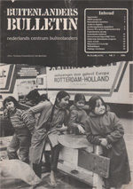Het wijkorgaan Crooswijk stopt in 1980 met haar medewerking aan het overleg in de projectgroep stadsvernieuwing, de bewonersorganisatie eist een maximum aan het aantal buitenlanders in de wijk van 16%.
Mevr. Luyendijk is actief in het wijkorgaan, ze is ook secretaris van het Samenwerkingsverband Oude Wijken. In een interview in 1984 vertelt ze over de komst van migranten in Crooswijk. (Buitenlanders Bulletin 1984)
“In Crooswijk woonden vroeger losse arbeiders, scharenslijpers en mensen zonder beroep. Ze werkten in de haven, bij Jamin, bij Heineken, in het slachthuis en overal waar wat te klussen viel. Ze konden nooit een behoorlijke baan, nooit een andere woning krijgen. Als je uit Oud-Crooswijk of Rubroek kwam was je gebrandmerkt. Vergeleken met de rest van Rotterdam verkeerde Crooswijk in een enorme achterstandssituatie. De Crooswijkers vonden ’t niet terecht dat, terwijl zij nog zoveel in te halen hadden, mensen de wijk binnenkwamen die zo mogelijk in een nog grotere achterstandsituatie zaten. Ze waren bang dat er met de komst van de buitenlanders niet meer over hun problemen zou worden gesproken maar over die van de buitenlanders.”
Dat de Centrumpartij in Crooswijk niet zo actief is komt omdat we hier een strijdbare bewonersorganisatie hebben, zegt mevr. Luyendijk. “De mensen kunnen hier over hun problemen praten. (..) Als je op een goede manier weet te vertellen dat we allemaal de dupe zijn, dan is alles best bespreekbaar.”
De mensen van het wijkorgaan proberen de buitenlanders wegwijs te maken. “Maar er lagen zoveel problemen, we konden de mensen nauwelijks nog helpen. Toen we merkten dat de buitenlanders hier bleven, dachten we: laten we er in godsnaam voor zorgen dat er een opbouwwerker voor de buitenlanders komt.”
Hiske Rockx doet mee met de onderwijsgroep. Op een aantal scholen zijn nog weinig Nederlandse kinderen. “Dat zou wat gestuurd moeten worden. Hoe kun je nou aan 32 Marokkaanse, Turkse, Spaanse, Surinaamse en Nederlandse kinderen aandacht geven?”
Enigszins zuiverend en kanaliserend bezig zijn
Dries Willems, opbouwwerker in Crooswijk, schetst de situatie die ontstaat na oplevering van grote nieuwbouwcomplexen op het Veemarkt- en Heinekenterrein.noot
“Een groot aantal oorspronkelijke bewoners trekt weg. De bewoners die achterblijven, krijgen het zwaar te verduren, want ook zij zouden eigenlijk weg willen, maar ze kunnen niet, ze hebben geen mogelijkheden om naar een nieuwbouwwijk te gaan of wat dan ook. Tegelijkertijd zien ze wel een enorme toestroom van buitenlanders. (…) Wat je dan als taak hebt als opbouwwerker is om eisen die men stelt zodanig te formuleren, samen met hen, dat het eisen worden die hanteerbaar zijn. Zowel voor de bewoners als voor de politiek en voor de ambtenaren die er mee moeten werken. Toen hebben we inderdaad vanuit Crooswijk een percentage gesteld omdat we van mening waren dat als je dat doet je in ieder geval een aantal middelen in handen kunt gaan krijgen om die enorme toestroom die plaats vindt enigszins in te binden. (…) Dat je geen concentratie moet bevorderen of toelaten, integendeel dat je decentralisatie, dat je spreiding moet bevorderen. Daarvoor moet je een aantal eisen stellen. Dat is de 16% geweest.”
De opbouwwerker benadrukt dat dit een heel andere eis is dan: ‘we moeten geen buitenlanders in de wijk, ze moeten allemaal oprotten’. “Het zijn gekanaliseerde eisen, ze zijn ook op politiek niveau aan de orde gekomen en er zijn uitspraken over gedaan.”
De gemeenteraad steunt de eis van spreiding van migranten bij de bespreking in 1981 van de nota Leegloop en Toeloop over de bevolkingsontwikkeling. Het maximum aantal migranten per wijk van 16% wordt ‘een streefpercentage’. Een uitvoeringsprogramma ontbreekt.
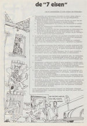Het Samenwerkingsverband Oude Wijken stelde eerder, in 1972, de eis van een maximum aantal buitenlanders van 5% per wijk. (7 eisen, 1972) De gemeenteraad steunde toen ook dit voorstel, maar de Raad van State oordeelde in 1974 dat woningtoewijzing op basis van afkomst strijdig is met het beginsel van gelijke behandeling. Veel bewoners waren niet onder de indruk, als ‘onmaatschappelijken’ werd bewoners van oude wijken in de jaren 60 de toegang ontzegd tot de corporatiewoningen in nieuwe stadswijken.
Boze bewoners hadden in 1972 een aantal logementen van gastarbeiders ontruimd in de Afrikaanderwijk. Pensions werden onder politiebescherming geplaatst. Nelly Soetens van het Aktie Komitee Pro Gastarbeiders AKPG voegde zich bij de belegerde bewoners, in het kantoortje van het wijkorgaan overlegde opbouwwerker Cees van Wijk met wethouder de Vos over het tegengaan van escalatie.noot
Helpt stadsvernieuwing helpt tegen buitenlanders?
Verwachting van veel bewoners in oude wijken is dat ‘stadsvernieuwing helpt tegen buitenlanders’. Bij het ‘bouwen voor de buurt’ hebben bewoners die meer dan 5 jaar in de wijk wonen voorrang bij toewijzing van een nieuwe woning, wethouder van der Ploeg steunt het beleid voor spreiding van migranten.
Op het Simonsterrein in Feijenoord wordt in 1975 het eerste grote nieuwbouwcomplex opgeleverd. Uit bewonersonderzoek in 1983 naar de resultaten van het bouwen voor de buurt, blijkt dat gescheiden werelden zijn ontstaan.noot
Vanuit hun nieuwbouwwoningen op het Simonsterrein hebben autochtone bewoners zicht op de oudbouw bevolkt door buitenlanders. Ze kijken aan tegen ‘die oude troep’ en tegen buitenlandse bewoners die geen gordijn voor de ramen hebben. De bewoners van nieuwbouwwoningen zien de komst van buitenlanders als teken dat ‘de buurt verpaupert’.
Nieuwe definitie van de situatie
Ook in het Oude Westen roept de komst van buitenlanders in de jaren 70 veel weerstand op. Leegkomende panden worden door de Aktiegroep gekraakt om te voorkomen dat er logementen voor gastarbeiders worden gevestigd, de gekraakte panden worden ter beschikking gesteld aan woningzoekenden uit de wijk. Kraken is ook een demonstratief middel richting gemeente, om aandacht te vragen voor de verpaupering van de wijk. De kraakacties krijgen steeds meer het karakter van een protest tegen de komst van gastarbeiders. De acties leiden tot hoogoplopende discussies binnen de Aktiegroep over solidariteit met buitenlandse arbeiders.
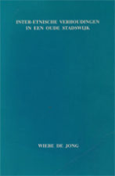Wiebe de Jong, activist in het Oude Westen en als sociaalpsycholoog verbonden aan de Erasmus Universiteit, beschrijft hoe in de periode 1970-1985 in het Oude Westen een tolerant klimaat ten aanzien van buitenlanders ontstaat. Of beter gezegd: wordt bewerkstelligd. Uit zijn studie (Interetnische verhoudingen in een oude stadswijk,1986) blijkt dat sociaal leiderschap, van bewonerskader en beroepskrachten, een cruciale rol speelt bij de acceptatie van de aanwezigheid van migranten.
88% van de bewoners van de eerste 125 nieuwbouwwoningen op de plek van vroegere noodwinkels aan de Nieuwe Binnenweg, is autochtoon. Dan ontstaat een nieuwe situatie. Er zijn, anders dan in Crooswijk of Feijenoord, geen grote braakliggende terreinen beschikbaar in de wijk, nieuwbouw is alleen mogelijk als eerst een oud woningblok wordt gesloopt. De herhuisvesting van de bewoners van slooppanden wordt bottleneck voor de voortgang van de stadsvernieuwing.
De Aktiegroep en de projectgroep stadsvernieuwing besluiten in 1979 dat ‘sloopurgentie’ voorrang biedt bij het verkrijgen van een nieuwe of gerenoveerde woning, ongeacht woonduur in de wijk of herkomst van de bewoner. De bevolkingssamenstelling van het Oude Westen is op dat moment al gemengd: 33.9% is in 1980 buitenlander (in 1971 was dit 11.4%), naar schatting 15% van de bewoners in 1980 is Surinaams.
De koerswijziging wordt door de Aktiegroep en ‘de betaalde krachten’ (het team van professionals dat in het kader van de stadsvernieuwing werkt voor de bewonersorganisatie) vooral verdedigd met een beroep op de voortgang van de stadsvernieuwing, een breed gedeeld belang in de wijk. Maar het wordt door de Aktiegroep ook neergezet als teken dat bewoners van het Oude Westen voor de verbetering van de woonsituatie afhankelijk zijn van elkaar. Dit vormt de basis voor wat de Jong noemt een nieuwe ‘definitie van de situatie’ door de leiding van de Aktiegroep: ‘de buitenlanders gaan niet meer weg, ze zijn ook wijkbewoners en hebben recht op een goede woning’.
De Aktiegroep heeft gezag in de wijk door de positie die ze inneemt in het stadsvernieuwingsproces. Ze kan zo een leidende rol vervullen bij het doorbreken van de tegenstellingen in de wijk. De ‘etnische tolerantie’ die ontstaat, vraagt geen affiniteit met andere, afwijkende, leefwijzen en opvattingen. Het is ‘duldgedrag’, het verdragen van anderen zolang ze zich houden aan regels die voor iedereen gelden.
De bewonersorganisatie neemt ook het voortouw in de strijd tegen de heroïne-overlast die in de jaren 80 in het gebied rond de West Kruiskade ontstaat. Een groot deel van de heroïnehandel is in handen van Surinamers, de Aktiegroep benadrukt dat de acties tegen heroïne-overlast niet gericht zijn tegen Surinamers maar tegen dealers. Inzet is concrete klachten en kritiek bespreekbaar te maken zonder het te plaatsen in een allesoverheersend kader van tegenstellingen tussen Nederlanders en buitenlanders.
De Onderwijswinkel, gelieerd aan de Aktiegroep, legde eerder contacten met ouders met diverse achtergronden en is katalysator voor de ontwikkeling van de Aktiegroep. Er wordt een nieuwe manier van communiceren en organiseren ontwikkeld, met een Turkse werkgroep, tweetalige Aktiegroepvergaderingen en internationale ontmoetingsdagen. Vergaderingen krijgen meer het karakter van ontmoetingen. Om dit te ondersteunen wordt budget van de Aktiegroep dat is bestemd voor stadsvernieuwingsondersteuning benut voor het aanstellen van beroepskrachten voor de Onderwijswinkel en voor migranten-opbouwwerk. De opbouwwerker van Turkse komaf helpt bij het tot stand brengen van een eigen plek van Turkse bewoners binnen de Aktiegroep.
De ontwikkeling gaat met horten en stoten. Vertegenwoordigers van de Centrumpartij worden uit de Aktiegroep-vergadering gezet. Een groep Surinaamse bewoners vertrekt uit protest tegen discriminerende taal in de bijeenkomsten. Marokkaanse bewoners die geen aansluiting vinden bij de Aktiegroep richten in de wijk een moskeeruimte in.
Opbouwwerkers in discussie
Over een spreidingsbeleid met een maximum aantal buitenlanders per wijk wordt verschillend gedacht door opbouwwerkers. Er zijn twijfels over de uitvoerbaarheid, sommigen noemen onderscheid bij woningtoewijzing op grond van herkomst racistisch. Overweging is ook dat de eis de afweer in de wijk kan vergroten omdat iedere nieuwkomer bij een maximum percentage al snel één teveel wordt. ‘Een gezamenlijke strijd voor goede en betaalbare woningen’ staat voorop. Samen met het Platform Buitenlanders wordt het spreidingsbeleid geherformuleerd: eis is dat het corporatiebezit in de hele stad wordt opengebroken zodat alle bewoners van oude wijken, migranten en Nederlanders, de mogelijkheid krijgen zich te vestigen in corporatie-woningen in naoorlogse gebieden.noot
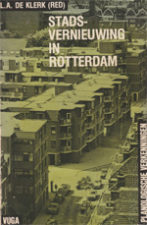De ‘evenwichtige bevolkingssamenstelling’ die centraal staat in de nota Leegloop en Toeloop over de bevolkingsontwikkeling wordt fictief, blijkt uit een analyse van onderzoeker Len de Klerk. (Stadsvernieuwing in Rotterdam, 1982) Het bouwen voor de buurt krijgt een andere invulling: het is in principe bouwen voor de huidige bevolking van stadsvernieuwingswijken met mensen met lage inkomens.
De opbouwwerker is er vanuit zijn positie op gericht migranten te betrekken bij de activiteiten van de bewonersorganisatie. Het jaarverslag 1980 van het Instituut Opbouwwerk Rotterdam IOR voegt daar aan toe: ‘feitelijke belangenstegenstellingen kunnen niet worden genegeerd, wat meebrengt dat beroepsmatige ondersteuning gewenst is voor zowel bewonersorganisaties als voor zelforganisaties van buitenlanders en actiegroepen die zich inzetten voor de verbetering van de positie van buitenlanders.’
De wijk is in Rotterdam een belangrijk politiek terrein voor belangenbehartiging rond huisvesting en voorzieningen. ‘De positie van immigranten in dit krachtenveld is zwak en het is een van de taken van het opbouwwerk die positie te versterken.’ Gevraagd wordt een duidelijk gemeentelijk beleid voor ontmoetingscentra van verschillende groepen migranten. ‘Naast algemene voorzieningen is de keuze nu vaak de moskee of het koffiehuis.’
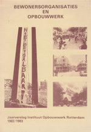‘Zelforganisatie’ is een meerduidig begrip signaleert het jaarverslag van het IOR in 1983. Voor veel immigranten van de eerste generatie wordt de moskee een belangrijk organisatiepatroon. Naast culturele en sport verenigingen zijn er stedelijke belangenorganisaties, verenigd in het Platform Buitenlanders waarin belangenbehartiging samengaat met politieke actie in de landen van herkomst.
Het IOR signaleert dat veel mensen door de crisis in een situatie komen te verkeren zonder maatschappelijk perspectief. Er bestaat een gevoel van onveiligheid en onzekerheid, er zijn cultuurconflicten. Klachten en problemen die dat meebrengt moeten serieus worden opgepakt en bespreekbaar gemaakt. Het ‘georganiseerd racisme’ van Centrumpartij vormt een bedreiging voor migranten. ‘Door buitenlanders neer te zetten als oorzaak van alle problemen wordt een klimaat geschapen voor geweld.’
‘Er ligt een grote stap tussen gevoelens van onvrede en racisme. Het bestempelen van allerlei uitingen en reacties als ‘racistisch’ miskent de achtergronden, individueel en maatschappelijk, van de problemen zoals die bestaan en vergroot het maatschappelijke isolement waarin veel groepen mensen in oude wijken verkeren. Antifascisme Komitees kunnen in dat verband als snel onderdeel worden van het probleem in plaats van bij te dragen aan de oplossing.’
Kankeren op buitenlanders
Opbouwwerkers en sociaal-cultureel werkers storen zich aan de vaak heftige en negatieve uitingen over buitenlanders. Het gekanker stelt de loyaliteit van beroepskrachten met bewoners op de proef. Idealen van ontplooiing en emancipatie lijken stuk te lopen, het welzijnswerk staat ter discussie.
De gezamenlijke instellingen nemen in 1984 het initiatief tot het ontwikkelen een training over ‘het omgaan met reacties van bewoners op buitenlanders’. Om de tafel zitten vertegenwoordigers van de Vereniging Club- en Buurthuiswerk Rotterdam VCR, Instituut Opbouwwerk Rotterdam IOR, Centrale Hervormde Jeugdraad CHJ, Stichting Buitenlandse Werknemers Rijnmond SBWR, Stichting Sociale Belangen Surinamers SSBS, en Platform Buitenlanders PBR. De instellingen werken samen bij maandelijkse themabijeenkomsten over migrantenwerk.
In de voorbereidingsgroep blijken verschillende visies.
Er is de opvatting dat discriminerende uitingen van bewoners ‘racistisch’ zijn. Stelling is dat racisme vanuit ons koloniale verleden verweven is met de hele westerse cultuur. Je komt het tegen in het overheidsbeleid, in schoolboekjes, politieoptreden en in Sinterklaas. En in ons eigen denken als witte mensen. De training moet ook gericht zijn op het onderkennen van racisme in jezelf, dat is voorwaarde om op juiste wijze te kunnen reageren op discriminerende reacties.
Anderen zien discriminerende reacties vooral als uitingen van onvrede en ontheemding. Racisme als ideologie van de minderwaardigheid van mensen van een ander ras manifesteert zich in Centrumpartij. Dit ‘georganiseerd racisme’ speelt in op gevoelens van ontheemding bij mensen die gemarginaliseerd raken door de crisis, de bezuinigingen op sociale voorzieningen en het wegvallen sociale verbanden. Het is taak van welzijnswerkers om het contact met mensen in achterstandssituaties in stand houden, de training moet helpen de rol van welzijnswerkers opnieuw te definiëren in de veranderde maatschappelijke situatie.
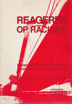De verschillen in benadering blijken niet te overbruggen. Er worden twee programma’s ontwikkeld, een training ‘omgaan met het buitenlandersprobleem’ en een training ‘omgaan met alledaags racisme’. (Reageren op racisme, een verslag van trainingen voor het wijkwelzijnskader, 1984)
De training over ‘het buitenlandersprobleem’ start met de vraag: welke problemen hebben wij als werkers met buitenlanders en welke problemen hebben bewoners.
Op een flap-over worden de thema’s geïnventariseerd:
problemen die ik heb:
- werken vanuit een algemene instelling en de wens (?) van zelforganisatie van migranten
- ik huiver bij hun conservatieve gewoonten (islam), hun opvoedingspraktijken en ideeën
- ik krijg geen inzicht in de politieke stromingen onder migranten,
ik voel me daardoor onzeker
problemen die anderen hebben:
- angst: ze pikken beste huizen en banen
- ze fokken maar aan, dadelijk zijn ze in de meerderheid
- angst voor Turkse mannen (fluiten, handtastelijkheden, niet meer veilig)
- ze krijgen alles gratis, er wordt voor hen veel meer gedaan
Uit rollenspellen blijkt dat autochtone bewoners zich afgestoten voelen als een werker een beschermende houding inneemt naar buitenlanders. Bemiddelen tussen groepen slaagt niet als een werker vraagt om medewerking, in plaats van dit op te eisen. Voor het stellen van regels in de omgang is een gezagvol optreden nodig. Dat vraagt een grotere vaardigheid in conflictbeheersing van werkers. De horizontale organisatiestructuur uit de jaren 70 van veel instellingen staat het vermogen om regels te stellen in de weg.
Stellingen die in de training ter discussie staan luiden: ‘de gezellige buurt bestaat niet’ (over de heterogene stadswijk die in de plaats komt van de volkswijk), en ‘beter een wijkagent dan een welzijnswerker’ (over het stellen en handhaven van regels).
Een ‘positief programma’ stelt dat welzijnswerk het georganiseerd racisme van de Centrumpartij geen halt kan toeroepen, het vraagt politieke actie in een samenwerking van alle democratische partijen van links tot rechts. Belangrijkste functie van het welzijnswerk is het bieden van mogelijkheden tot contact, het leren van dingen, het opkomen voor belangen in de woon- en leefsituatie voor groepen mensen die in de knel komen. Dat is de bijdrage van het welzijnswerk aan het tegengaan van de angst en onzekerheid, uitzichtloosheid en isolement die de maatschappelijke ontwikkelingen meebrengen.
Het vertrek uit buurten van oorspronkelijke bewoners met de komst van buitenlanders hoeft geen teken van racisme te zijn, zegt burgemeester en socioloog Bram Peper in 1991. “Maar toen de zangvereniging, de kerk, het café en de kaartclub verdwenen, gingen bewoners op zoek naar een plek met meer sociale cohesie.” noot
Migrantenopbouwwerk
De praktijk van het Oude Westen wordt een voorbeeld voor migranten-opbouwwerk in andere wijken. Organisatie in een eigen Turkse werkgroep betekent voor het Oude Westen niet dat tegenstellingen groter worden. In tegendeel, het leidt ertoe dat allochtonen meer op voet van gelijkheid komen met autochtonen.
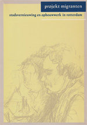In 1983 gaan 12 opbouwwerkers van Turkse, Marokkaanse en Kaapverdiaanse komaf aan de slag bij bewonersorganisaties met het opzetten van spreekuren, voorlichting over stadsvernieuwing en het organiseren van groepen migranten.noot
Via spreekuren en individuele hulpverlening worden contacten gelegd met groepen migranten in de wijk. Migrantenopbouwwerkers fungeren als contactpersoon bij het maken van keuzen voor deelname aan renovatie, nieuwbouw of verhuizen naar een oudbouwwoning, treden op als tolk en geven voorlichting. (Projekt migranten, stadsvernieuwing en opbouwwerk in Rotterdam, 1988)
De opbouwwerkers werken aan kadervorming van migrantengroepen in de wijk via een Marokkaanse of Turkse werkgroep. In enkele wijken wordt gekozen voor het opzetten van een sociaal-culturele vereniging. Niet alle bewonersorganisaties staan open voor migrantengroepen, migrantenwerkers moeten een positie zien te verwerven.noot
Strijdpunt binnen bewonersorganisaties is de vraag naar eigen ruimten van migrantengroepen. Over de relatie met moskeeën bestaan verschillende opvattingen. noot
Wethouder Simons staat met de oprichting van SPIOR aan de wieg van een nieuwe opbouwwerkinstelling op levensbeschouwelijke grondslag. In de jaren 70 maakte het welzijnsbestel op verzuilde levensbeschouwelijk grondslag plaats voor politiek gestuurde ‘welzijnsplanning’.
Wethouder Simons stelde vast dat het opbouwwerk te weinig deed voor moslims, zegt Willem Tuijnman, hoofd van bureau migranten in een terugblik. “Het opbouwwerk had er begrip voor dat er wat moest veranderen, heel veel zelfs, maar kreeg het niet voor elkaar. Toen is de gemeenteraad ermee akkoord gegaan om te proberen tot een overkoepelende moslimorganisatie te komen.” (Samen staan we sterker, SPIOR 1988-2013; SPIOR 2013)
Een opbouwwerkinstelling met één been in de bewonersorganisatie en het andere in de moskee was voor het IOR nooit een optie.
Osman Dogan, opbouwwerker in het Oude Westen, signaleert dat de moskee een rem vormt op samenwerking tussen Turkse bewoners en Nederlanders. Hij ziet dat steeds meer migranten druk ervaren van normeringen van de moskeebesturen. Ongeveer de helft van de Turkse wijkbewoners doet mee aan activiteiten van de bewonersorganisatie, zo’n 15% komt alleen naar het spreekuur maar doet niet mee met acties. Een derde groep wil niets te maken hebben met de Aktiegroep en maakt antireclame.
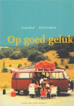In een terugblik Instanbul-Rotterdam, (Op goed geluk, 2006) beschrijft Dogan de verschillen tussen Turkse bewoners die vaak van het platteland komen en grote stadbewoners. ‘Voor mannen is het moeilijk om de Nederlands manier van denken en doen te accepteren. Zij komen uit gesloten gemeenschappen waar het dagelijks leven wordt bepaald door ongeschreven wetten van tradities en geloof.’ De rollen van vader, moeder, man, vrouw dochter en zoon liggen vast. ‘Een vrouw die haar eigen beslissingen neemt, dat is in grote delen van Turkije onbestaanbaar.’
De Turkse werkgroep viert jaarlijks het Republiek feest, in herinnering aan Atatürk, de stichter van het moderne Turkije met een scheiding van kerk en staat.
Driss Tabghi, werkzaam bij de bewonersorganisatie Werkgroep Oud Charlois, kiest voor de opzet van een Marokkaanse Culturele Vereniging. De vereniging is bedoeld als broedplaats voor Marokkaans kader. Jongeren en vrouwen krijgen de mogelijkheid om mee te participeren, iets wat absoluut onmogelijk is binnen een andere opzet, aldus Tabghi. Een zelforganisatie is ‘tussenstation/thuishaven’ naar integratie met behoud van eigen cultuur.
De Marokkaanse vereniging weet een eigen ruimte te verwerven. Stadsvernieuwing is niet het centrale thema, bij de eerste generatie staat het beperken van de woonlasten voorop. Belangrijke activiteit is alfabetisering in eigen taal en in het Nederlands. Opvoeding, schoolverzuim en ouderbetrokkenheid in het onderwijs zijn actiepunten. Het spreekuur is informatiepunt voor vragen over verblijfsrecht, gezinsherenging, toewijzingsbeleid. De Marokkaanse Vereniging zet zich ook in voor ‘onderwijs in eigen taal en cultuur’ OETC en een moskee in de buurt. Er wordt een vadergroep gevormd die toezicht houdt op het gedrag van jongeren.
De vereniging heeft een eigen zelfstandige plek binnen de bewonersorganisatie. De beroepskrachten van de bewonersorganisatie Werkgroep Oud Charlois stellen zich op als ‘service-instituut’ en werken voor diverse bewonersgroepen en initiatieven in de wijk, van werkloosheidsprojecten, een wijkrestaurant, huurdersorganisaties en de Marokkaanse vereniging.
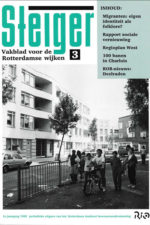Het migrantenwerk stuit ook op weerstanden. Het werk wordt bemoeilijkt door ‘het integratie-idee, konkurrentie tussen instellingen en vreemdelingenhaat’ signaleert de opbouwwerker van Bospolder/Tussendijken. De Turkse werkgroep en de Marokkaanse oudervereniging claimen een deel van de wijksubsidies voor sociaal-culturele activiteiten, ze worden door buurthuizen als een bedreiging gezien. (Steiger 1989/3) In dezelfde editie van Steiger, vakblad voor de Rotterdamse wijken, schrijft een bewonersondersteuner over irritaties in een bewonersgroep in Spangen over vertalingen in het Turks waardoor het overleg steeds wordt onderbroken. Ook het aantal grote woningen dat wordt opgenomen in de stadsvernieuwingsplannen stuit op weerstand. ‘De bewonersorganisatie is het kontakt verloren met een deel van de witte bevolking en slaagt er nog steeds moeilijk in om kontakt met zwarte bewoners te maken’, concludeert hij.
In Bloemhof en Hillesluis wordt het migrantenopbouwwerk door het Rio losgemaakt van de bewonersorganisaties, om beter in contact te kunnen komen met Turkse bewoners, mannen en vrouwen. (Steiger 92/2) Migrantenwerkster Cemile Cezer constateert dat ze vanuit een onafhankelijke positie beter kunnen achterhalen wat Turkse bewoners belangrijk vinden. “We worden in onze contacten niet belemmerd door andere agenda’s waarmee we rekening moeten houden.” Fevzi Karaca vult aan dat ze andere partijen, ‘ook bewonersorganisaties’, beter kunnen aanspreken op wat Turkse migranten belangrijk vinden.
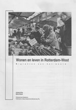Migrantenopbouwwerker Antonio Silva en Mpho Ntoane, medewerker van het wijkpastoraat Middelland, doen in 1994 een onderzoek bij zelforganisaties, moskeeën en kerken in Delfshaven, (Wonen en leven in Rotterdam-West, migranten aan het woord, 1994). Belangrijkste punt van zorg blijkt de kwaliteit van het onderwijs. Nederlands ouders brengen hun kinderen naar scholen buiten de wijk, veel migranten overwegen hetzelfde te doen, Islamieten denken aan het oprichten van eigen scholen. Concentratie van migranten wordt gezien als een probleem. ‘Nederlanders maken bewust de keuze om niet tussen migranten te wonen, woningbouwcorporaties, zo meent men, houden rekening met deze specifieke wensen.’
Eind jaren 90 is 70% van de bewoners van Delfshaven van allochtone afkomst. De deelgemeente laat onderzoeken of het aanbod van welzijnsinstellingen aansluit op de vraag van bewoners.
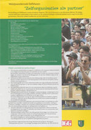Het Welzijnsonderzoek Delfshaven (2000) constateert dat welzijnsinstellingen samenwerken met zelforganisaties bij het leggen van contacten met doelgroepen. Het blijkt moeilijk om samenwerkingsrelaties op te bouwen die zijn gebaseerd op de vragen en behoeften van de zelforganisaties zelf. Grote uitdaging is om samen te werken op voet van gelijkheid: ‘zelforganisaties als partner’. Aanbeveling is dat het opbouwwerk zich in de multiculturele wijken van Delfshaven nog duidelijker opstelt als een voorziening die ten dienste staat aan uiteenlopende bewonersgroepen, ouderverenigingen en zelforganisaties.
Opbouwwerker en sociaal projectleider Jan Maas werkt in de Millinxbuurt. Hij stelt zich ten doel mensen bij elkaar te elkaar brengen (OpbouwWerkwerkschrift, 2002/1). Wat is er aan de hand dat mensen zich zo druk maken over een losse stoeptegel of een vuilniszak naast de container, vraagt hij zich af. Maas denkt dat mensen in een bewonersgroep vooral op zoek zijn naar gelijkgezinden. In de straat zijn buitenlanders komen wonen, familieverbanden zijn losser geworden. “Zinvolle verbanden waarin mensen een plek hebben zijn schaars geworden. Als je meedoet aan acties tegen verpaupering hoor je weer ergens bij.”
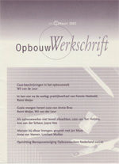Hij stelt dat je als opbouwwerker niet bang moet zijn voor verschillen. Je moet ook niet tegen mensen zeggen dat ze niet over buitenlanders mogen praten. “Het is belangrijk dat mensen eerst kunnen praten in eigen kring. In de Surinaamse vereniging en de Antilliaanse vrouwengroep vinden mensen een vertrouwde omgeving. Het clubhuis van de speeltuin is zo’n tehuis voor traditionele witte mensen.”
Maas organiseert ‘focusgroepen’. In de eerste gespreksronde praten mensen in homogene groepen over hun eigen normen en waarden ten aanzien opvoeding, wonen en samenleven. Volgende vraag is: wat zouden andere groepen denken over deze onderwerpen? In de derde gespreksronde gaat het over het beeld dat anderen hebben van jouw opvattingen. Een van de effecten van de gesprekken is dat de sfeer in de buurt sterk verbetert. “Je voelt je een stuk veiliger als je die Antilliaanse jongen op de hoek van de straat een keer gesproken hebt.” De gespreksgroepen zijn ook opstapje voor de Millinx-soap, een theaterproductie waarin bewoners verwikkelingen in de buurt uitspelen.
Groepsfoto in Pendrecht
Het aandeel autochtone bewoners in Pendrecht daalt van 72% in 1991 naar 41% in 2004. Naast Antillianen, Surinamers, Turken en Marokkanen wonen er ook asielmigranten uit voormalig Joegoslavië en Somalië in de wijk. Het aantal kinderen verdubbelt van 735 naar 1442.
Veel bewoners van het eerste uur vertrokken naar Barendrecht. ‘Blijvers’ zoeken elkaar op in de nieuwe ouderencomplexen, de Ostrea-flat vormt een vluchtheuvel voor de oudere generatie.
Veel blijvers sluiten zich af nieuwkomers. Ze zijn teleurgesteld over ‘de achteruitgang van de wijk’ en zetten zich af tegen groepen nieuwe bewoners. Ze zien herstructurering als vooruitgang, ze verwachten van de wijkvernieuwing betere woningen en het vertrek van de Antillianen.
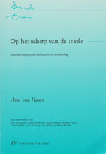Opbouwwerker Rieks Westrik legt contacten met uiteenlopende groepen (Op het scherp van de snede, samenlevingsopbouw in een buurt-in-verandering, 2004). Hij ziet de bestaande organisatie- en overlegcultuur als een barrière voor nieuwe bewoners om een positie te verwerven in de wijk. Hij zoekt ook naar mensen die niet actief zijn binnen georganiseerde kaders.
Bij initiatieven in de buurt zoeken mensen met eenzelfde culturele achtergrond elkaar op. Een Sinterklaasfeestje dat een Antilliaanse vrouw organiseert trekt vooral Antilliaanse kinderen, het Turks Huis is een ontmoetingsplek en steunpunt voor de zestig Turkse families in de wijk. Ervaring van de opbouwwerker is dat een eigen plek stimulerend werkt. “Je moet eerst iets doen met verschillende groepen afzonderlijk. Zo krijgen ze een beetje meer eigen kracht en kunnen het dan aan om iets met andere organisaties samen te doen. In de multiculturele variant, met gemengde groepen, zijn de Nederlanders vaak dominant en haken anderen af.”
Het is een benadering die een positieve waardering vraagt van diversiteit en van verschillen tussen groepen. De opbouwwerker streeft ook naar een verbinding tussen ‘eigen plekken’ en ‘gezamenlijkheid’. Aan een grote Opzoomer sportmanifestatie in 2002, de ‘Champions League van Allemaal Rotterdammers’, doen allerlei verschillende groepen mee. Iedere groep kan kiezen voor een eigen activiteit, op een eigen plek in de wijk. Bij de slotbijeenkomst worden de groepen samengebracht op een centrale plek. Alle deelnemers doen zo mee aan een gezamenlijke manifestatie, maar ieder op een eigen wijze. “Dit voorkomt dat mensen met verschillende achtergronden zich aan elkaar ergeren, ruzie maken over de regels en de baas proberen te spelen. Een groepsfoto van de prijsuitreiking met alle deelnemers straalt uit: we hebben iets geweldigs gehad samen.”
De opbouwwerker is ook in gesprek met de oudere Pendrechtenaren. “Ze zijn toch de constante factor in de wijk en kunnen zorgen voor integratie en sociale cohesie. Sterke punt van die generatie is dat ze veel weten van nabuurschap en hoe je dat moet organiseren met verenigingen en bewonerscommissies.”
De woningcorporatie speelde vanaf de bouw van Pendrecht eind jaren 50 een centrale rol in het borgen van sociale cohesie. De corporatie selecteerde nieuwe bewoners op woongedrag en sprak bewoners aan op het naleven van de regels.
“Bij mensen van de eerste generatie zit tragiek. Ze zagen de wijk in de jaren 90 in de versukkeling raken met de komst van nieuwkomers. Je hoort ze denken: kunnen ze geen geoefende bewoners op ons afsturen, mensen van onze eigen soort, het gaat zo toch de verkeerde kant op. Daarin zit een diepe teleurstelling.”
Een vervuild balkon en een zonwering die steeds uithangt is een grote ergernis in een bewonersvergadering. Er woont een Antilliaanse familie. Zo’n balkon vinden de omwonenden vreselijk. Ze vragen elke keer aan de corporatie en de gemeente waarom daar niets aan gedaan wordt. “Het wordt ervaren als een inbreuk op hoe het hoort, op wat netjes is en hoe de buurt altijd was. Vroeger kwam de huismeester meteen orde op zaken stellen. Oudere Pendrechtenaren werden zelf door de corporatie aan de regels gehouden. Op een gegeven moment is dat allemaal losgelaten. Mensen begrijpen niet hoe dat heeft kunnen gebeuren.”
Bij de gemeenteraadsverkiezingen in 2002 haalt Leefbaar Rotterdam 40% van de stemmen in Pendrecht, de PvdA daalt van 43% (1998) naar 24%.
Bij een wijkbezoek in 2004 geeft wethouder Pastors Leefbaar Rotterdam zijn definitie van de situatie: “Tot de jaren 80 was dit een fatsoenlijke wijk. Mensen die wat beters zochten, groeiers, konden niet terecht omdat bijna alle woningen huurwoningen waren en gingen naar Barendrecht. Er kwamen anderen voor hen in de plaats, buitenlanders, mensen die geen respect hebben voor de normen en waarden hier.”
Een prognose van het Centrum voor Onderzoek en Statistiek COS in 2003 voorspelt een daling van het aantal autochtone bewoners in Charlois van 52% in 2002 naar 15% in 2017.noot
De Ossenissebuurt aan de zuidkant van Pendrecht is doorgangsbuurt, de portieketagewoningen worden volgens plan over vijf jaar gesloopt. Opbouwwerker Frank Boerboom werkt hier vanuit een leefbaarheidsproject. Hij signaleert eenoudergezinnen met schulden en uit de hand gelopen opvoedingsproblemen met tieners. Er is een drugsscene en straatgeweld.
Moeders vinden elkaar, ze passen op elkaars kinderen en lenen van elkaar. De opbouwwerker helpt bij de vorming van een moedergroep en het vinden van een ruimte in de buurt. Hij organiseert een training over conflicten tussen tieners en moeders, moeders van Caribische komaf gaan in gesprek met de Nederlandse moeders van de speeltuin.
Hij zet ook een brassband op, als zelfbeheerproject van Antilliaans jongeren en moeders. De moedergroep en de brassband ziet hij als ‘sociale leerprocessen’. De initiatieven leiden tot nieuw sociaal leiderschap waarbij mensen uit Caribische en mediterrane kring naar voren treden in de wijk.
De vrouwen organiseren een stille tocht in reactie op het doodschieten van de dertienjarige Sedar Soares. Pendrecht wordt ‘preventief-fouilleer gebied.’ De opbouwwerker heeft twijfels over deze aanpak. Maar: “Twee jaar geleden zei de politie van sommige situaties: daar gaan we niet op af. Dat was niet goed en het is prima dat daar een eind is gekomen.”
In sloopbuurten in Pendrecht, Zuidwijk en Hoogvliet zijn de staat en maatschappelijke instituties zwak aanwezig, blijkt uit het praktijkonderzoek van opbouwwerk in buurten-in-verandering. De lijst van signaleringen van opbouwwerkers is lang: de politie mijdt buurten, politieposten zijn niet op sterkte, instanties handhaven regels niet, er zijn geen klantvriendelijke en effectieve procedures voor het melden van drugsoverlast, er wordt onvoldoende ingegrepen bij burenoverlast, er zijn te weinig voorzieningen voor begeleiding van verslaafde en verwarde personen, ex-psychiatrische patiënten worden geplaatst in flats in doorgangsbuurten, er is gebrekkige controle op overbewoning, het ontbreekt aan opvang en begeleid wonen voor Antilliaanse jongeren.
Het toewijzingsbeleid voor woningen wordt in de jaren 90 vervangen door een aanbodmodel waarbij woningzoekenden zelf een keuze kunnen maken uit het woningaanbod. Met het verdwijnen van het inplaatsingsbeleid voor nieuwe bewoners van woningcorporaties wordt discriminatie bij woningtoewijzing tegengegaan. Maar het betekent ook dat een belangrijk instrument voor sociale begeleiding van bewoners wegvalt. De verantwoordelijkheid voor een goed woonklimaat wordt vooral bij bewoners zelf gelegd.
Terugpraten
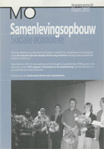Fatima Lamkharrat is opbouwwerker in het Oude Noorden. Ze noemt zich ‘Rotterdamse van Marokkaanse afkomst’. “Ik voelde me altijd wel lekker in Nederland en in Rotterdam. Maar met Pim Fortuyn en 11 september veranderden er toch een aantal dingen. Je wordt steeds aangesproken als moslim en als Marokkaan.”
Zelfkritiek geldt niet alleen voor Marokkanen en moslims, meent Lamkharrat.
(MO-Samenlevingsopbouw, 2/2005) “Discriminatie en uitsluiting zijn ook geweld en heeft grote effecten op hoe mensen zich voelen, als persoon en in de wijk.”
Samen met drie andere vrouwen organiseert ze na de moord op Theo van Gogh een demonstratie ‘vrouwen voor vrede’.
Ze doet, met gemengde gevoelens, mee met het Islamdebat dat het gemeentebestuur in 2005 organiseert. Ze vindt het verbijsterend en beledigend wat wethouders zeggen over bepaalde groepen. “Islam wordt vooral neergezet als probleem en als belemmering voor integratie. Er wordt niet gekeken naar economische en sociale problemen, zoals uitsluiting van jongeren. Dat werkt de politieke islam in de hand. Dat soort mensen azen op jongens die zijn afgeknapt op de samenleving en nergens meer naar toe kunnen. Zo begint het. Ze bieden een club waar je bij kunt horen.”
“Onze ouders hadden het idee dat ze hier te gast waren en dat ze zich moesten aanpassen. Ik heb een andere instelling. Ik heb dezelfde rechten en plichten als ieder ander. Ik ben gewoon burger van dit land. Ik ga niet zeggen, ik ben later gekomen dus ik moet maar mijn hoofddoekje afdoen. Nee, we moeten het samen doen.”
Schoon, heel en veilig
Opbouwwerkers hebben te maken met uiteenlopende claims en loyaliteiten. In de jaren 70 en 80 zijn ze verbonden met bewonersorganisaties die opkomen voor de belangen van bewoners in stadsvernieuwingswijken. Vanuit die positie proberen ze buitenlanders te betrekken bij bewonersorganisaties.
Ervaring daarbij uit het Oude Westen is dat de vorming van een eigen Turkse werkgroep binnen de Aktiegroep tegenstellingen niet vergroot maar kan leiden tot communicatie op voet van gelijkheid. In een aantal wijken wordt gekozen voor de vormig van eigen organisaties van migranten, in een los verband met de bewonersorganisatie.
Stadsvernieuwing is voor migranten van de eerste generatie geen centrale issue, gemeenschappelijk punt is vooral een eigen ontmoetingsruimte. Veel gastarbeiders, pioniers die als jonge mannen naar Nederland trokken, verliezen tijdens de crisis van jaren 80 hun werk. Ze zijn vaak ongeschoold en spreken gebrekkig Nederlands. Velen belanden in de WAO, vaak zoeken ze hun heil in de moskee.
Stadsvernieuwing stuit in de jaren 90 met stijgende woonlasten op grenzen, het bouwen voor de buurt met betaalbare sociale huurwoningen blijkt een inhaalslag geweest te zijn. Resultaat van stadsvernieuwing is een enorme verbetering van de woonsituatie van mensen met lage inkomens en een grote voorraad bereikbare huurwoningen. Twintig jaar later is de vraag naar sociale huurwoningen onverminderd groot, de wachttijd in 2018 is 5 jaar. Tegelijkertijd is er een tekort aan huur- en koopwoningen in de vrije sector en is er vraag naar een gevarieerder woningaanbod in stadswijken.
Eind jaren 90 wordt een aantal buurten geteisterd door drugsoverlast en criminaliteit. Bij acties tegen heroïne-overlast rond de Westkruiskade in de jaren 80 maakt de Aktiegroep Oude Westen duidelijk dat de acties gericht zijn tegen drugshandelaren en niet tegen Surinamers. Poging is om concrete klachten en kritiek bespreekbaar te maken, zonder dit steeds te plaatsen het kader van tegenstellingen tussen Nederlanders en buitenlanders.
In de jaren 90 wordt drugscriminaliteit steeds meer neergezet als Antillianen- en Marokkanen-probleem. Veiligheid wordt in Rotterdam noemer voor politieke mobilisatie waarbij drugscriminaliteit, falend gedoogbeleid en ‘het allochtonen-probleem’ worden vermengd.
 Bewonersorganisaties kunnen vaak niet langer fungeren als samenbindende kracht in de wijk. Acties voor ‘schoon, heel en veilig’ blijken in wijken met een diverse bevolking ook te kunnen leiden tot verdeeldheid en uitsluiting waarbij klagers de overhand krijgen.
Bewonersorganisaties kunnen vaak niet langer fungeren als samenbindende kracht in de wijk. Acties voor ‘schoon, heel en veilig’ blijken in wijken met een diverse bevolking ook te kunnen leiden tot verdeeldheid en uitsluiting waarbij klagers de overhand krijgen.
Opbouwwerkers verleggen in de jaren 90 de koers en vormen nieuwe sociale verbanden. (Johan Janssens, Een nieuw zonnetje 1993) Het bewonersinitiatief krijgt een ander karakter, met Opzoomeren en straatgroepen waarin bewoners van diverse komaf elkaar vinden. Daarnaast ontstaat een grote variëteit van zelforganisaties van allerlei groepen.
Het migrantenopbouwwerk als aparte functie verdwijnt, instellingen krijgen een diverser personeelsbestand.
maart 2018
Als je met de ogen van nu, los van de context van toen, leest over het spreidingsbeleid en de kraakacties tegen de vestiging van pensions, komt het over als regelrechte discriminatie. Dat is niet terecht, schrijft Ton Huiskens in een reactie.
Reactie van Ton Huiskens op Veranderde bevolking
Als je met de ogen van nu, los van de context van toen, leest over het spreidingsbeleid en de kraakacties tegen de vestiging van pensions, komt het over als regelrechte discriminatie. Dat is niet terecht.
Als jong broekie deed ik in de jaren 60 en 70 mee met de actiegroep Het Oude Westen en het Samenwerkingsverband Oude Wijken.
De jonge bewoners waar ik bij hoorde waren toen niet alleen actief binnen hun wijk, maar ook op andere gebieden als hogeschool, universiteit, derde wereldbeweging en milieubeweging. We voelden ons onderdeel van een internationale vernieuwingsbeweging. Mooi voorbeeld hiervan is dat tijdens de val van Allende in 1972 er in de wekelijkse actiegroep vergadering in het Oude Westen een korte golf verbinding was met de sloppenwijk van Santiago. Dat is nu bijna niet meer voor te stellen.
Over gastarbeid en de huisvesting van buitenlandse arbeiders werd nagedacht in termen van internationale solidariteit en solidariteit met de autochtone Nederlandse bewoners. De kritiek op gastarbeid kwam ook uit derde wereld beweging, waarin ik toen betrokken was via de NOVIB.Eind jaren zestig, begin jaren zeventig werden op grote schaal gastarbeiders gerekruteerd. Op dat beleid was ernstige kritiek. De meest houtsnijdende kwam van professor Tinbergen (de latere Nobelprijswinnaar voor economie). Hij betoogde dat het tijd was voor internationale arbeidsdeling. Ongeschoolde arbeiders moesten niet naar Nederland worden gehaald, maar industrieën die nog veel ongeschoolde arbeid nodig hadden moesten verplaatst worden naar die ‘ontwikkelingslanden’. Stelling was dat de toenmalige vorm van gastarbeid slecht was voor de Nederlandse economie en voor de landen die deze arbeid exporteerden. Bovendien tastte het hier en in de landen van herkomst de sociale stabiliteit aan. De kritiek op het verschijnsel ‘gastarbeid’ bleek ook economisch gezien terecht: de vers geïmporteerde arbeid bleek bij de eerste de beste crisis massaal werkloos te worden.
Het beleid ging uit van terugkeer van de gastarbeiders naar het land van herkomst. Een illusie, dat was toen ook al bekend, omdat er geen behoorlijke economische perspectieven voor hen waren en velen kampten met armoede en politieke marginaliteit.
Kritiek op gastarbeid betekende echter niet dat we niet solidair waren met de gastarbeiders zelf. In het Oude Westen werd gekraakt tegen pensions en die woningen kwamen beschikbaar voor gezinnen (ook van buitenlandse afkomst, dat waren toen vooral Portugezen, Joegoslaven).
Er was wel werk geregeld voor gastarbeiders in Nederland, maar geen huisvesting. In de oude wijken waren vrijwel alle woningen particulier bezit. Die woningen vielen door gebrek aan kwaliteit en lage prijs (beneden de huurwaarde) niet onder de centraal geregelde woningdistributie. Woningen werden in snelgroeiend tempo pensions waar soms de bedden per shift verhuurd werden. Grote groepen mannen huisden in mensenpakhuizen, met lekkage, tocht, slecht sanitair, brandgevaarlijk.
Er was sprake van extreme uitbuiting van gastarbeiders, onaanvaardbare woonomstandigheden en ja ook van sociale spanningen. Het was de tijd van de minirok en de seksuele bevrijding, met de daarbij behorende subtiele grenzen van wat wel en niet kan. Dat werd niet altijd begrepen door mensen met totaal andere omgangsvormen, geen kennis van het Nederlands (niet nodig, ze gingen toch terug) en met een cultuur waarin ‘eer’ een grote plaats inneemt. Menige gastarbeider vond het toen een slecht idee om hun keurig bedekte vrouwen naar ons land te laten komen.
Was er discriminatie? Ja, alleen al het bestaan van de op slavenhandel lijkende import van ongeschoolden was discriminatie. Discriminatie was er toch het minst in de oude wijken, daar werd gezocht naar bestrijding van woonellende en het tegengaan van sociale spanningen.
Het Samenwerkingsverband Oude Wijken stelde in 1972 een eisenpakket op dat een einde moest maken aan de onaanvaardbare woonomstandigheden en aan de concentratie van pensions in de verpauperde delen van de stad. (7 eisen van oude wijken, 1972) Het moest ook een antwoord zijn op de sociale spanningen en de discriminatie van de bewoners van de oude wijken zelf. Deze bewoners kwamen zelf maar moeilijk in aanmerking voor sociale huurwoningen omdat ze in een ‘asociale wijk’ woonden. Er werden eisen gesteld aan de woonkwaliteit voor gastarbeiders en er werden eisen gesteld om stadsvernieuwing en reconstructie van de wijken mogelijk te maken, in plaats van grootschalig sloop.
Solidariteit, maar dan wel van iedereen, van alle Rotterdammers en niet alleen van de bewoners van de oude wijken.
Het eisenpakket van de wijkcomités werd na rellen in de Afrikaanderwijk door de gemeenteraad aangenomen.Eind jaren 60 en begin jaren 70 (in ieder geval tot 1974) speelde het opbouwwerk nauwelijks een rol in de Rotterdamse oude wijken. Het Samenwerkingsverband Oude Wijken was een bewonersinitiatief waar het opbouwwerk uit die dagen niet bij betrokken was. Uit het Samenwerkingsverband kwam het OSOW (Overleg Stadsvernieuwing Oude Wijken) voort dat de bouwstenen voor de stadsvernieuwing zou leggen.
Opbouwwerker Cees van Wijk was tijdens de rellen van de Afrikaanderwijk contactfunctionaris tussen het College van B. en W. en het wijkorgaan Afrikaanderwijk, dat zelf uiteraard niet betrokken was bij de rellen, maar wel een bemiddelende rol kon spelen. Opbouwwerkers hadden nog een ambtelijke status en onderhielden als een soort overheidsvoorlichters contact met de meer formele vormen van bewonersorganisatie.
Het opbouwwerk was voor de actiegroepen en wijkcomités in die dagen een van de instituties die veranderd moesten worden. (En dat gebeurde ook: het opbouwwerk werd in de jaren 70 na lang touwtrekken met de gemeente onder zeggenschap van bewonersorganisaties gebracht, van ambtenaar werden ze werknemers in een particuliere stichting met een bestuur dat in meerderheid werd benoemd door bewonersorganisaties.)Elke migratie is ook een persoonlijk drama. Het losweken van banden met de familie, het buitenlander worden in het land van aankomst (en ook in het land van herkomst), het beginnen op een nog lagere sociale trede, het gezien worden als minder en je moeten ‘emanciperen’ naar een andere cultuur. Een omgeving die jou en je kinderen en kleinkinderen blijft beschouwen als buitenlander, er half bijhorend. In een stuk over migranten en opbouwwerk moet zo’n ondertoon voelbaar te zijn.
Er zijn grote verschillen tussen groepen migranten. Het maakt nogal wat uit of het gaat over jonge mannen die als gastarbeiders in pensions wonen, Nederlandse postkoloniale immigratiestromen als Molukkers, Surinamers, Antillianen, of Angolezen en Kaap Verdianen. Voor een goed begrip van verschillende initiatieven moeten deze verschillen in het oog worden gehouden.
De gezinshereniging was een alles veranderende beweging. Begin jaren 70 was duidelijk dat de meeste ‘gastarbeiders’ niet terug zouden gaan. Erkenning op rijksniveau van Nederland als immigratieland heeft lang op zich laten wachten. Tot de jaren 80 was er nauwelijks gezinshereniging. De eerste buitenlandse kinderen in de jaren 70 op de Josephschool in het Oude Westen waren kinderen van politieke vluchtelingen uit Chili, na de staatsgreep van Pinochet en de val van Allende doorgaans van hoogopgeleide ouders.
We hebben te maken gehad met een gigantische volksverhuizing. Met trial en error hebben in Rotterdam duizenden werkers in het onderwijs, de politie, het bedrijfsleven, sociale huisvesting, welzijnswerk, de ambtenarij en bewoners uit de achterstandsbuurten zelf, deze beweging in banen geleid. De emancipatie machine van het onderwijs is aangepast aan de nieuwe opgaven en dat aanpassingsproces is nog steeds gaande. In buurten heeft een veelheid van initiatieven geleid hebben tot een relatief vredige maar voor velen ook pijnlijke overgangsperiode, in een klimaat van beleidsmatige ontkenning.
Dit nam en neemt niet weg dat de nadelen van de immigratie voornamelijk gedragen worden door mensen die qua inkomen, werk, opleiding, huisvesting en gezondheid op achterstand staan. De voordelen in de vorm van goedkope en flexibele arbeid komen ergens anders terecht.
De grote inspanning van de afgelopen decennia wordt nu politiek geframed als “pappen en nathouden”. Dat is onterecht. Werken vanuit verschillende perspectieven, met oog voor zowel richting, grenzen, als verbinding in een voortdurende veranderende omgeving is complex en vraagt stuurmanskunst. Die is op grote school aan de basis van de samenleving getoond.
Ook als je internationaal kijkt heeft de gemiddelde nieuwe Nederlander en autochtone Nederlander het hier beter dan bijvoorbeeld in Frankrijk, of Groot-Brittannië. Er is er hard gewerkt. Je zou een tekst uit ons koloniaal verleden parafraserend bijna zeggen: hier is iets groots verricht. Naast het monument voor de migrant in de Afrikaanderwijk is ook een monument op zijn plaats voor de autochtone Rotterdammer. Zijn leven is bijna net zo ingrijpend veranderd als dat van de migrant. Het opbouwwerk was van tijd tot tijd ook zo’n monumentje, waarin meerdere perspectieven samenkwamen.
Maart 2018
Ton Huiskens, Rotterdamse activist, opbouwwerker en sociaal projectontwikkelaar